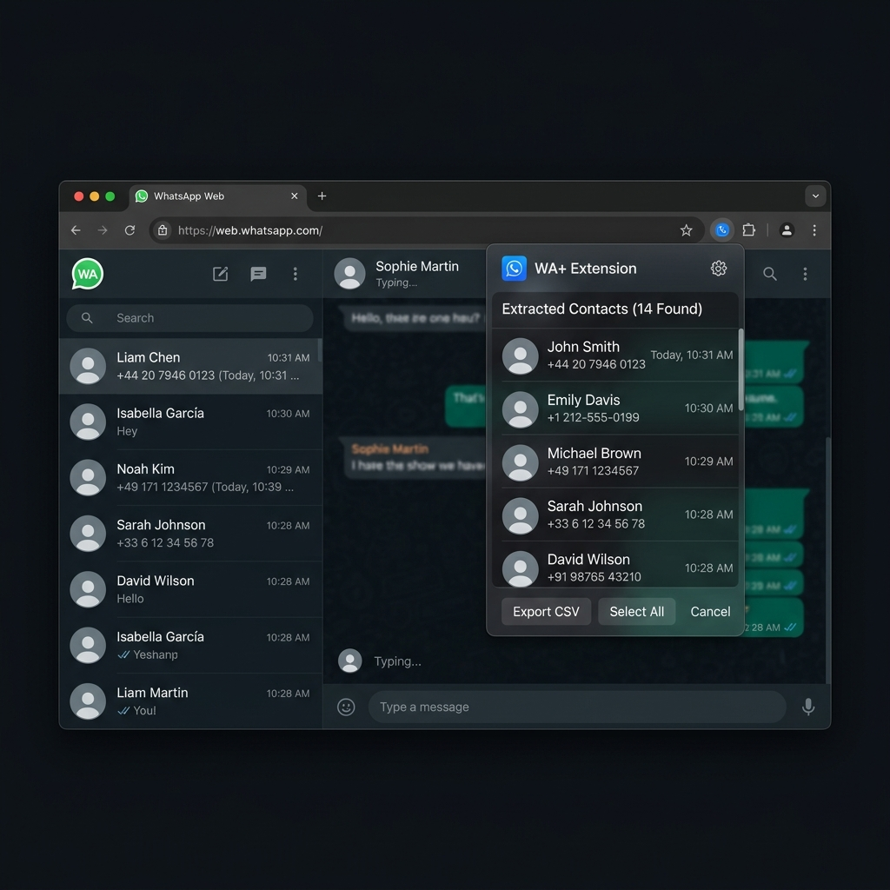

Extract participants, phone numbers, and avatars directly from your active WhatsApp Web sessions. 100% local. Zero database lag. Maximum privacy.

Join the growing community of professionals who trust WA+ for their group management.
Everything you need to extract and manage your WhatsApp groups.
From installation to extraction in four simple steps.
Download WA+ from the Chrome Web Store and pin it to your browser toolbar for easy access.
Navigate to web.whatsapp.com and log in by scanning the QR code with your phone.
Click on the group chat you want to extract participants from. Then, click on the header of the group to open the group info sidebar.
Click the WA+ extension icon in your browser toolbar, then click Extract Participants. You can view all members, copy them in CSV format to your clipboard, or click to download the CSV file instantly.
In case you missed something
Join community managers and business owners who rely on WA+ for fast, private, and reliable group exports.